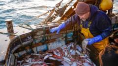

US slaps sanctions on Indian, Turkish firms and people for aiding Iran
US slaps sanctions on Indian, Turkish firms and people for aiding Iran Reuters
US slaps sanctions on Indian, Turkish firms and people for aiding Iran Reuters

The food deal, ahead of a UK-EU summit later this month, is the most significant part of the so-called Brexit reset agreed so far.
China’s Yutong Bus, the world’s largest electric bus manufacturer, is seeing its overseas shipments climb steadily, with demand growing rapidly in countries such as Australia, Malaysia, Saudi Arabia and Morocco. Based in Zhengzhou in central China’s Henan province, the company no
A truce has cooled the trade conflict, but neither country has done anything to limit the outbreak of new hostilities Donald Trump ’s trade wars have largely fallen off the headlines. Fears of new tariffs flare up from time to time when the US president goes off the rails – for i
China Tech Frenzy Turns Into Year of Dismay for Retail Traders Bloomberg.com

A senior Democrat says his party will work to end U.S. President Donald Trump's tariffs on allies, including Canada, when it takes control of Congress next year.
As Cristiano Ronaldo retires from international football, Guillem Balague looks at why and what is next for the Portugal legend.
Etwas Bestimmtes gesucht? Alle Meldungen durchsuchen.